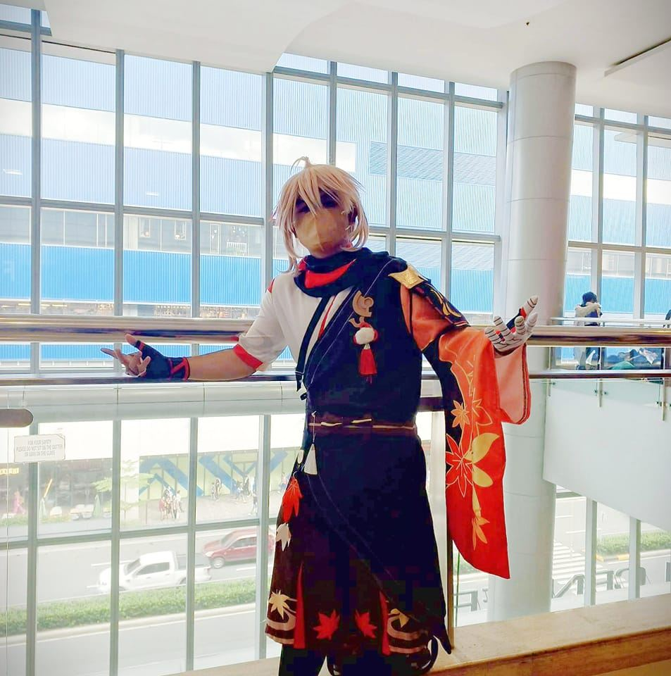

Users
Gallery
About

John Jerick B. Arrogancia
Hello there! My name is John Jerick, and I'm currently enrolled as an undergraduate student in the Bachelor of Science program for Information Technology, specializing in the field of Web and Mobile Application Development. I have chosen this course of study because I am passionate about pursuing a career in web development.
As a student specializing in web development, I have acquired a substantial amount of knowledge and practical experience in a range of web development technologies such as HTML, CSS, JavaScript, and PHP. This expertise enables me to skillfully design and develop websites and web applications that are dynamic, responsive, and interactive. I strive to create digital solutions that effectively cater to the requirements of both businesses and users.

About my socials
Allow me to introduce myself, a proud aficionado of memes and aficionado of weird humor. I find immense joy and amusement in the realm of memes, where the ordinary becomes extraordinary and the bizarre takes center stage. From absurd punchlines to unexpected twists, I revel in the art of meme culture.
In the vast sea of internet humor, I navigate through the depths of dank memes, surreal jokes, and offbeat comedy. The sheer creativity and wit displayed by meme creators never fail to leave me in stitches. Whether it's a cleverly captioned image or a hilariously edited video, I appreciate the unique blend of pop culture references and twisted humor that memes offer.
Being a connoisseur of memes and weird humor is like belonging to a special club where we revel in the unconventional and embrace the absurd. It's a world where laughter knows no bounds and where the unexpected becomes the norm.
So, if you find yourself sharing in the delight of unconventional humor, rest assured that you're among like-minded individuals who appreciate the beauty of memes and the laughter they bring. Let's embark on this journey together, exploring the depths of weirdness and humor that only memes can provide.